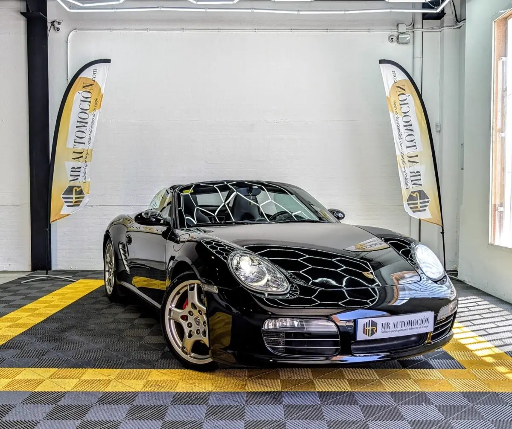

1 / 24Ponemos a la venta este espectacular e impecable Porsche Boxster S (Generación 987) , matriculado en junio de 2006 . Se trata de una unidad de absoluto reestreno mecánico y de colección, que registra tan solo 105.665 km reales y certificados. Esta unidad destaca por un historial de propiedad intachable: cuenta con todos los mantenimientos rigurosamente sellados en concesionario oficial Porsche , conservando facturas y un registro minucioso de cada cuidado recibido.
Un vehículo con una fiabilidad del 100% que representa una oportunidad única para los entusiastas de la marca. En posición central-trasera late el glorioso motor atmosférico de 6 cilindros bóxer y 3.2 litros, que desarrolla 280 CV . Un bloque legendario por su sonido purista, su elasticidad y su entrega de potencia lineal, asociado a una precisa caja de cambios manual de 6 velocidades que transmite toda la fuerza directamente al eje trasero, ofreciendo una experiencia de conducción idílica y totalmente conectada con el asfalto.
Configuración exterior Pintura negro basalto metalizado: Una tonalidad profunda y exclusiva que realza las líneas musculosas del chasis, combinando a la perfección con su capota de lona eléctrica también en color negro. Suspensión Activa PASM ( Porsche Active Suspension Management ): El extra más deseado de su parte ciclo.
Un sistema de amortiguación variable electrónica que adapta el chasis en tiempo real y permite seleccionar el modo deportivo para rebajar la altura y endurecer la suspensión. Llantas opcionales SportDesign de 19": Impresionantes llantas multirradio originales de la marca que redefinen por completo la planta del coche y albergan las míticas pinzas de freno monobloque sobredimensionadas en el característico color rojo Porsche.
Faros de Xenón de alta intensidad con sistema de lavafaros integrado y deflector de viento (paravientos) original desmontable para maximizar el confort en autopista con la capota abierta. Interior premium y confort Asientos deportivos en cuero negro: Asientos con un agarre lateral sobresaliente, tapizados en cuero natural negro de tacto exquisito y en un estado de conservación impecable.
Sistema PCM ( Porsche Communication Management ): Consola central de fábrica equipada con pantalla panorámica a color y módulo de navegación integrado. Paquete de sonido plus: Sistema de audio optimizado con amplificador y mayor número de canales para disfrutar de la mejor acústica incluso a altas velocidades.
Volante deportivo de 3 radios forrado en cuero, climatizador automático digital, ordenador de viaje detallado, retrovisores con ajuste eléctrico y elevalunas automáticos. Tu compra segura con MRAutomoción Disfruta de un deportivo de culto con la máxima transparencia y tranquilidad: ✅ Historial de concesionario oficial: Libro de mantenimiento íntegramente sellado en Porsche. ✅ Kilometraje certificado: 105.665 km garantizados. ✅ Garantía completa de 1 año (12 meses). ✅ Transferencia incluida: Gestión documental y cambio de nombre incluidos en el precio de venta llave en mano. ✅ Consúltanos nuestras ventajosas condiciones de financiación flexible a tu medida.
| Marca | Porsche |
|---|---|
| Modelo | PORSCHE Boxster S 3.2 280 CV |
| Año | Jun 2006 |
| Kilómetros | 105.665 km |
| Combustible | Gasolina |
| Cambio | Manual |
| Potencia | 280 CV |
| Garantía | 1 Año |
| IVA | NO DEDUCIBLE |
Quizá también te encaje